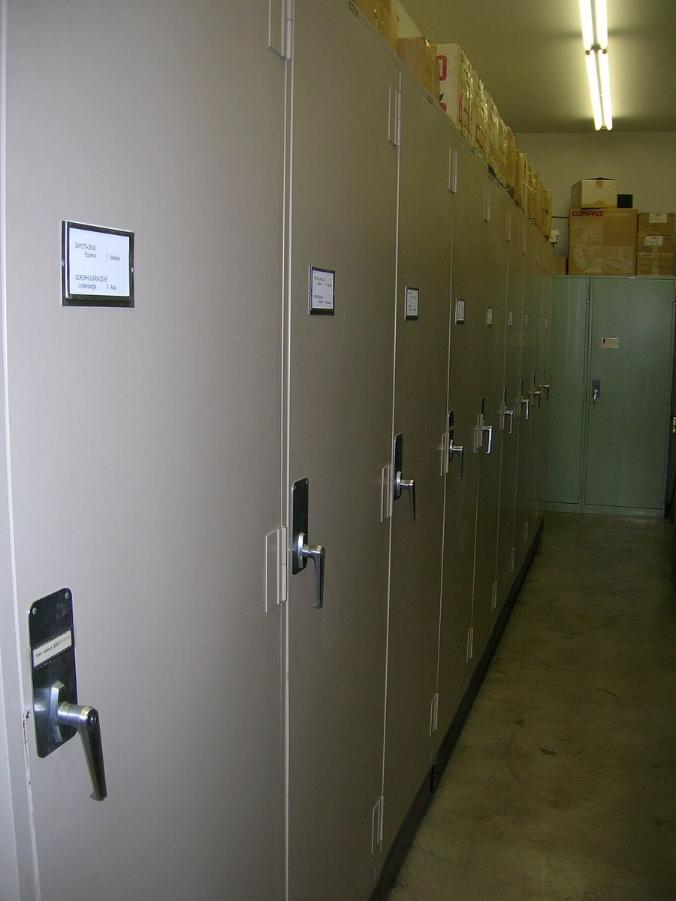
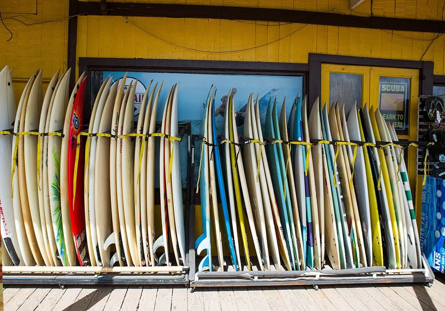

Honolulu
United States · 21.3070°N 157.8670°W

J. F. Weedon · Public domain
Make this Notebook Trusted to load map: File -> Trust Notebook
Điểm tham quan
- Bãi Waikiki & Diamond Head
- Pearl Harbor – USS *Arizona* Memorial, Battleship *Missouri*
- Iolani Palace (cung điện hoàng gia duy nhất trên đất Mỹ)

Bishop Museum- Hanauma Bay
- Nuuanu Pali Lookout not found
- Polynesian Cultural Center

North Shore
Dệt may & smart textile
- - Trung tâm của ngành **aloha shirt**: **Tori Richard** (lập 1956, đến nay vẫn đặt tại Honolulu; chuyên chiffon, lụa, cotton lawn) và **Reyn Spooner** (lập 1962; **Spooner Kloth** — vải độc quyền cho phép in mặt trái để họa tiết mờ đi, một sáng chế vật liệu thật sự chứ không chỉ thời trang). - Di sản: **kapa** — vải vỏ cây Hawaii (đập từ vỏ wauke), và **Hawaiian quilting**; xem tại Bishop Museum. - Không có R&D smart textile not found